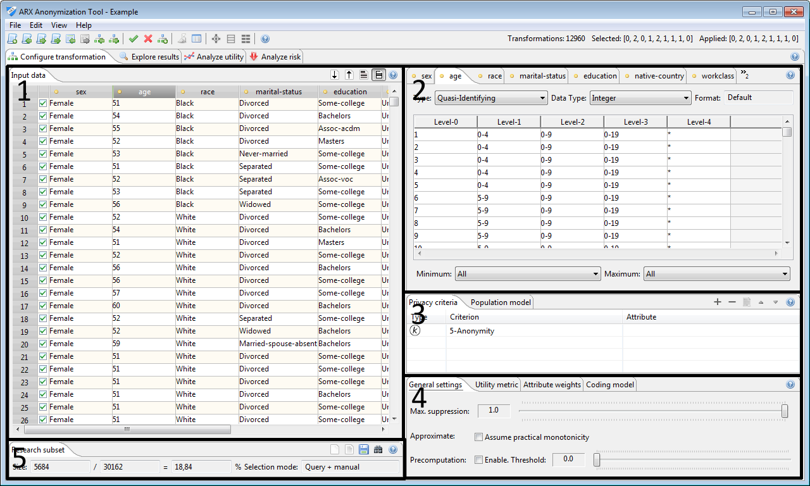

In this perspective, firstly, a dataset can be imported into the tool and attributes can be characterized. Secondly, generalization hierarchies for quasi-identifiers or sensitive attributes can be generated automatically by means of a wizard or imported into the tool. Thirdly, the desired privacy criterion and the metric for information loss can be specified.
This perspective is divided into five main areas. Area 1 shows the current input dataset, area 2 allows to specify information about its attributes, area 3 is for defining privacy criteria, area 4 enables specifying further properties of the transformation process, such as the coding model, how loss in utility should be measured and how important certain attributes are. Area 5 allows defining a research dataset, which is a subset of the overall dataset that is to be anonymized and exported.